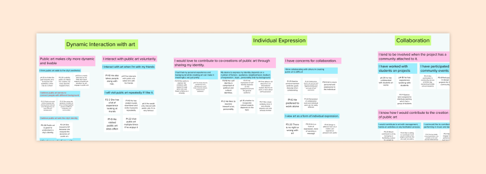
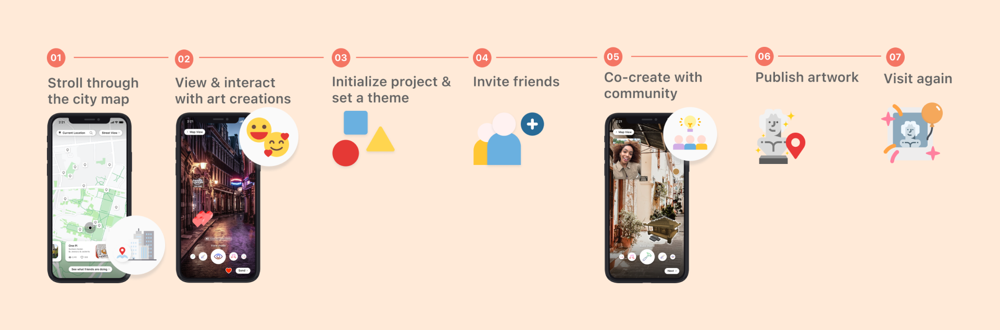
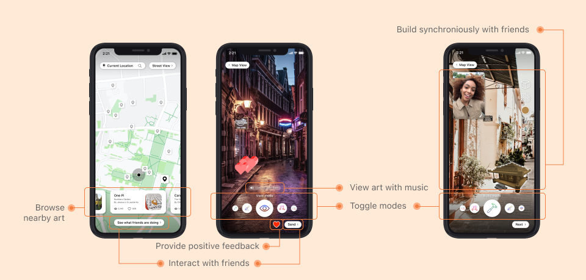

Problem
Public art co-creation is unfamiliar to many, yet this could help foster qualities that make cities more measurable livable.
Insight
People need motivation to enjoy the outcome and experience of co-creating through synchronized working and low threshold for collaboration.
Outcome
A mobile app that uses Augmented Reality (AR) to allow users to co-create art with friends and families on top of existing landmarks around the city
How might we encourage the general public to take part in art co-creation project while feeling connected to the community and confident about expressing themselves?
Every form of art is very personal. Even community driven art is personal, but we still lack a system in which each individual creator can contribute in the creation process with lower threshold while enjoying themselves.
Contextual Inquiry and Affinity Diagramming
We interviewed and probed five participants to understand people’s
attitude on public art. We identified gaps and
opportunities of the public art co-creation process. We then synthesized
our results by conducting interpretation sessions for each interview then affinity diagramming.

Think-Alouds and Usability Findings
We conducted think-alouds on an art co-creation game
online,
A Fake Artist Goes to New York. We then gathered insights on
users’ needs when collaborating and synthesized our results using
usability findings.

Storyboarding and Speed Dating
We determined five potential areas of need and created three comic-based stories for each area. In the speed dating sessions, interviewees were presented with these storyboards and we probed them for their feelings towards each storyboard. The storyboards and speed dating sessions revealed the prioritization of sub-problems.
From the previously stated user research methodologies, our team discovered the following insights:
Motivation for Outcome and Process
People need motivation to enjoy the outcome and experience of
co-creating. Friends and family members can also serve as motivation
for people to participate in the art co-creation process. People also
value the process more than the final product.
Building the Community through Interactions
People value working in a synchronized environment, which also gives
them the sense of building the community. Synchronized collaboration
enables interactions among participants and inspires creativity
through real-time communication.
Low Threshold for Collaboration
There needs to be a low threshold for the art co-creation process for
people to feel comfortable to participate in it. Each contributor
should be able to express themselves alongside their friends.
Negative Critique Unwelcome
People fear negative critique, so it’s important that people are not
exposed this. Since art is very personal, people also feel that art
critique is personal.
Journey
Screen Designs
Closing Thoughts
In this process, I learned numerous user research methods, such as contextual interviews, affinity diagramming, think-alouds, and storyboarding and speed dating. These methods were especially difficult to use and learn from in the face of social distancing and lockdown guidelines, so all of these methods were conducted online. In light of this, I learned how to work better with teammates online and be more analytical, especially in probing interviewees for insights and unique discoveries.